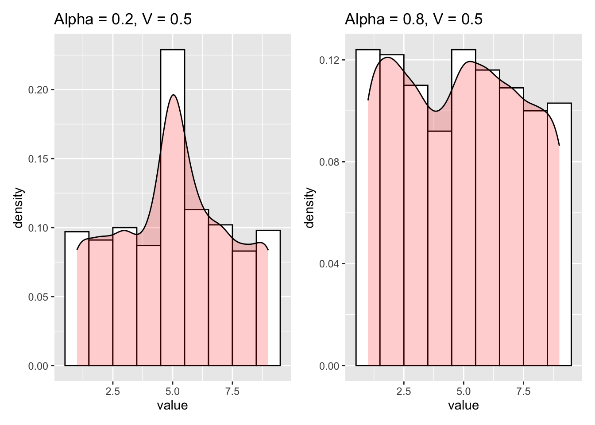
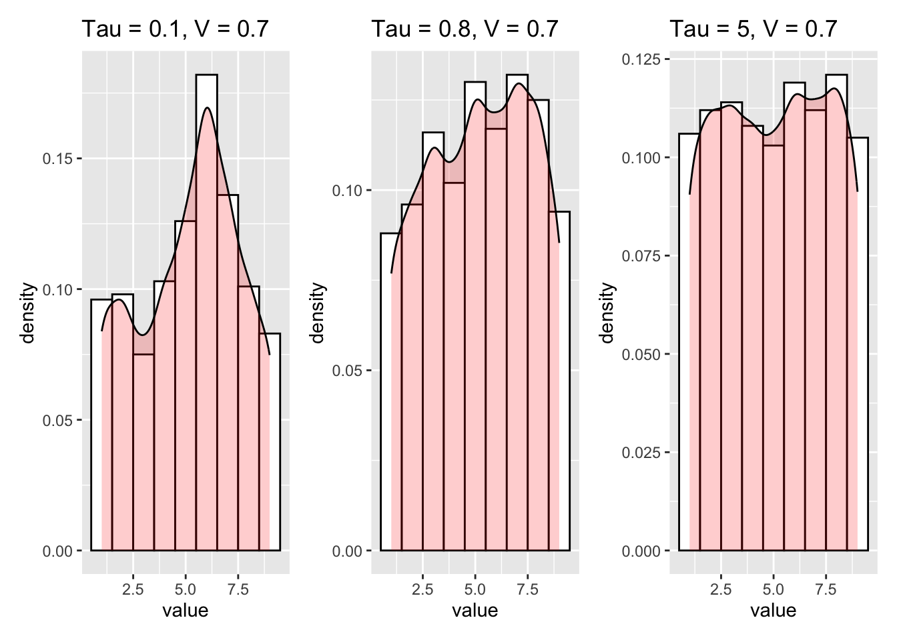

This is a function that links associative value to a probability distribution of choices. Given the choices are ordinal, a likert scale of 1 to 9, where 8 is larger than 7, but is not necessarily 8 times larger than 1, or twice as large as 4.
In neural networks, they sometimes use regularisation, to make the one-hot encoding less hot.
\[\begin{align} \alpha & = \text{A parameter which sets the hotness} \\ K & = \text{The number of choices} \end{align}\]
\[ \huge p = (1-\alpha) ~\cdot~[0,0,1] ~ +~ \frac{\alpha}{K} \]

Its still quite binary, and doesn’t capture any ordinal features.
Really we are looking for a unimodal distribution, centred around the associative value.
There are a few suggested ways of doing this. Poisson distribtions are not flexible enough. Binomial distributions dont work at extreme values. The beta distribution could work, but is hard to parameterise with only a mean or mode.
But from this paper, I found an alternative solution.
https://www.sciencedirect.com/science/article/pii/S0925231220300618?via%3Dihub
\[ \tau = \text{Our inverse temperature parameter, essentially choice precision}\]
\[\begin{align} \huge p_i~ &\huge= exp\left( - \left| \frac{ \frac{i}{K} - V_t}{\tau}\right|\right) \left\{i \in \mathbb{Z}~ | ~1 \leqslant i \leqslant K \right\} \\ \huge p~ &\huge = \text{Softmax}\left(p_1,p_2,...,p_K\right) \end{align} \]
By subtracting a label from ground truth, you see a measure of distance from ground truth. In this instance, associative value is ground truth, and the labels are K equal points along the unit interval. In FLARe this will be 9, to represent the nine possilbe choices on the scale.

A low \(\tau\) means a more precise choice, with further away choices much less likely than near choices (left). A higher \(\tau\) means nearer choices are almost as likely, with further away choices still unlikely (middle). Finally a very high \(\tau\) makes the distribution almost uniform, per the normal regularisation (right).